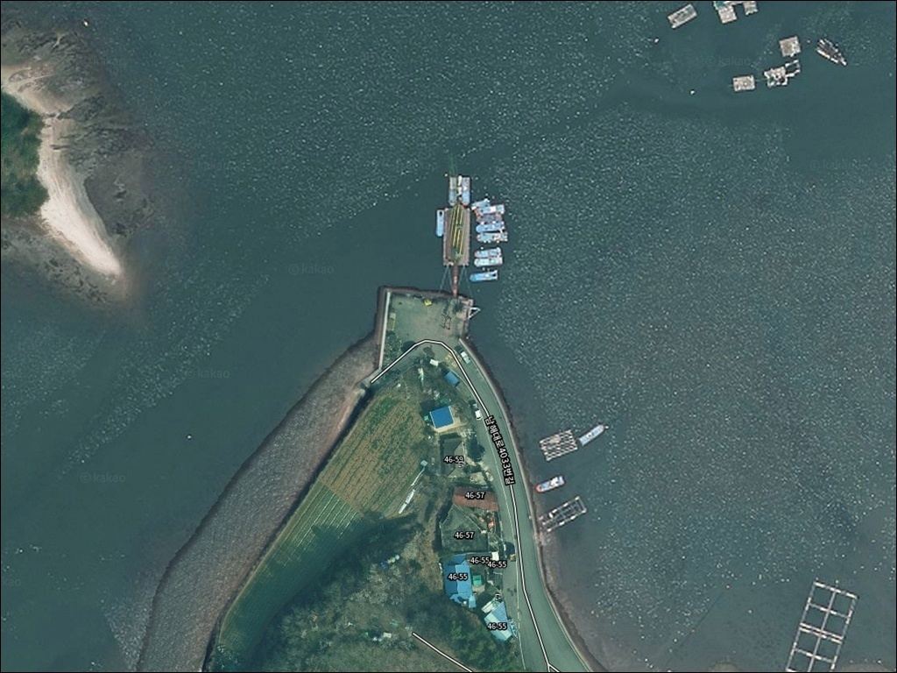
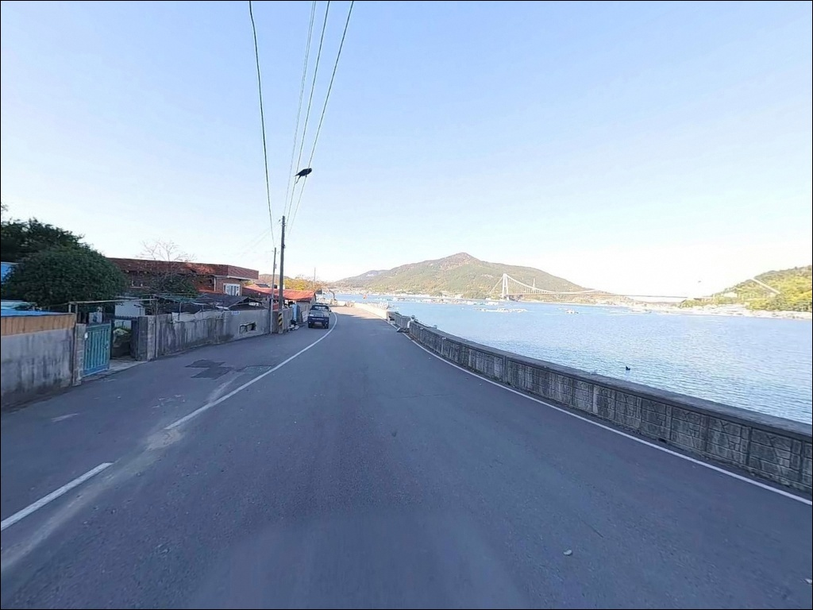
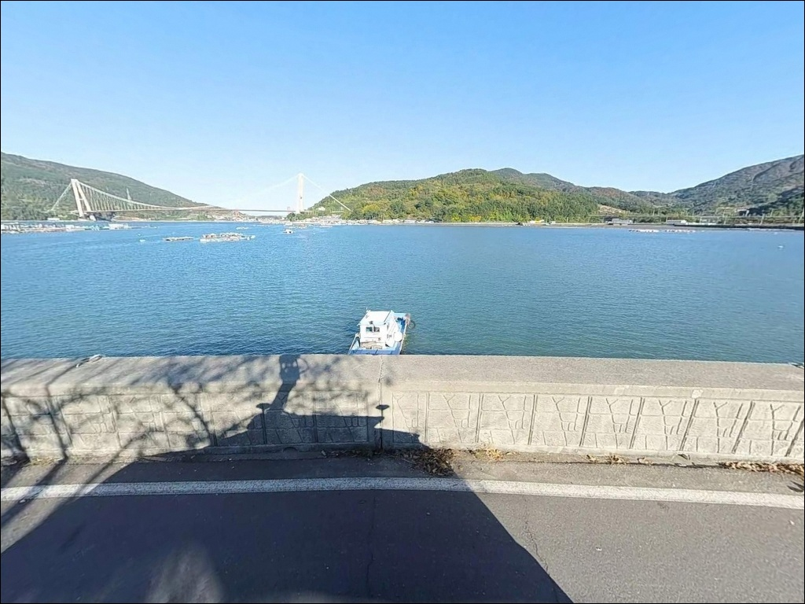
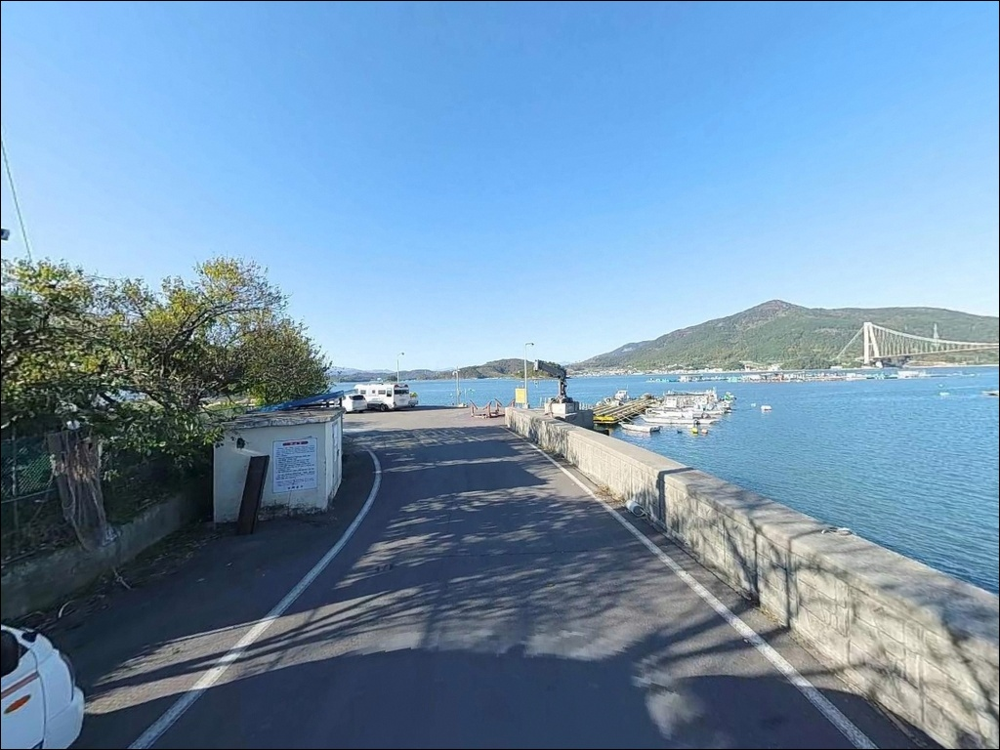
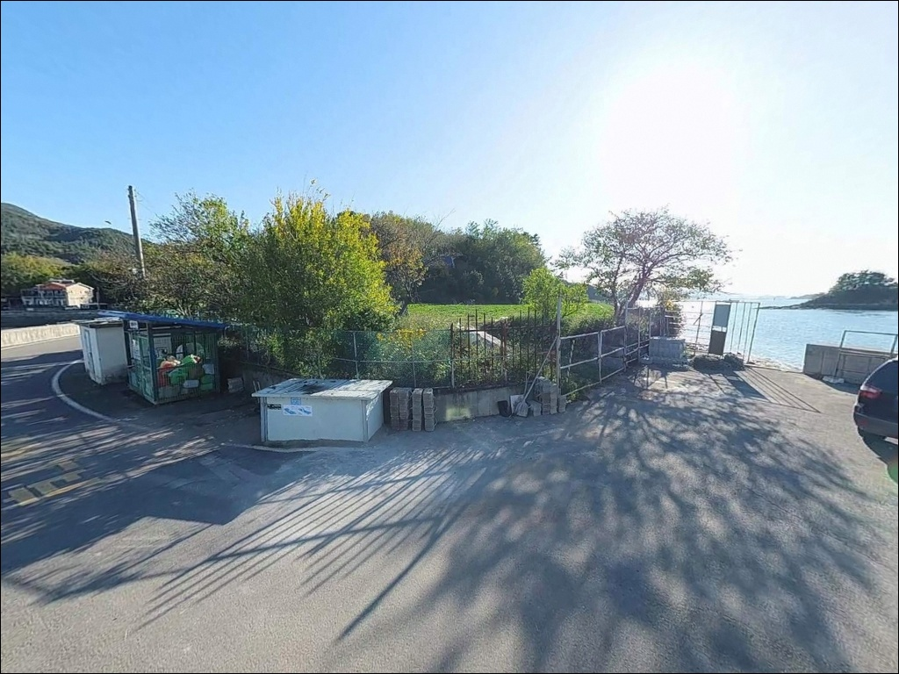
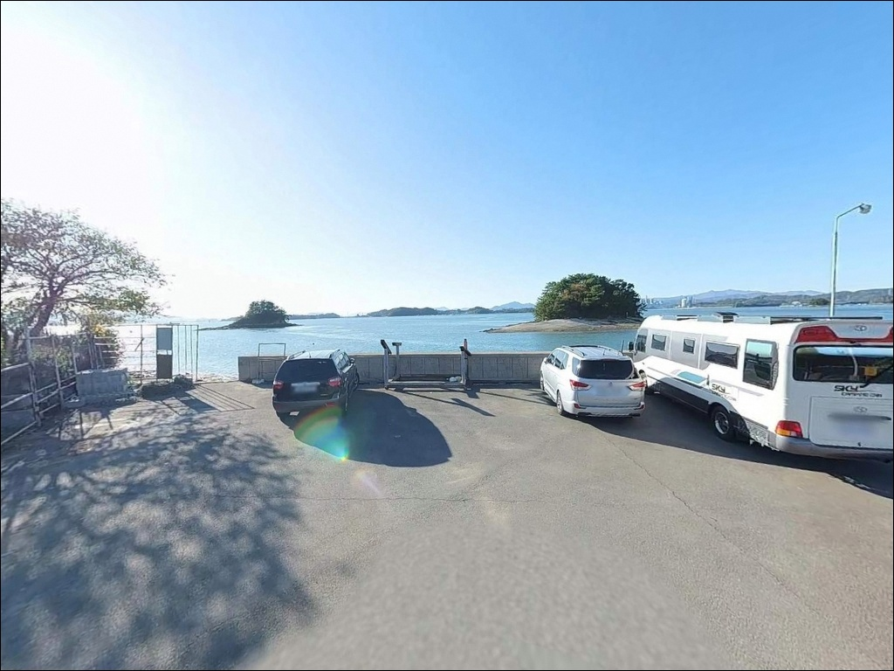
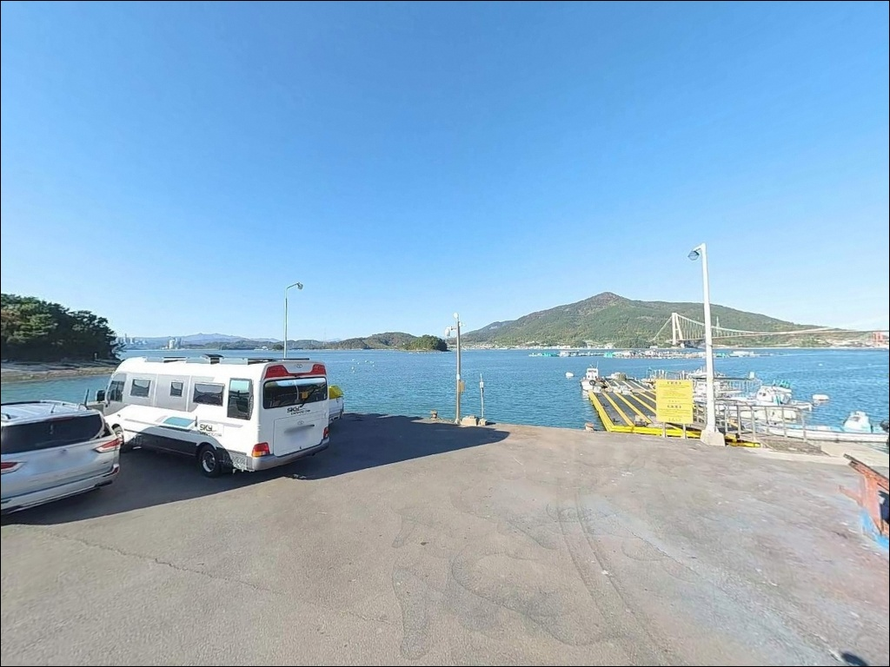
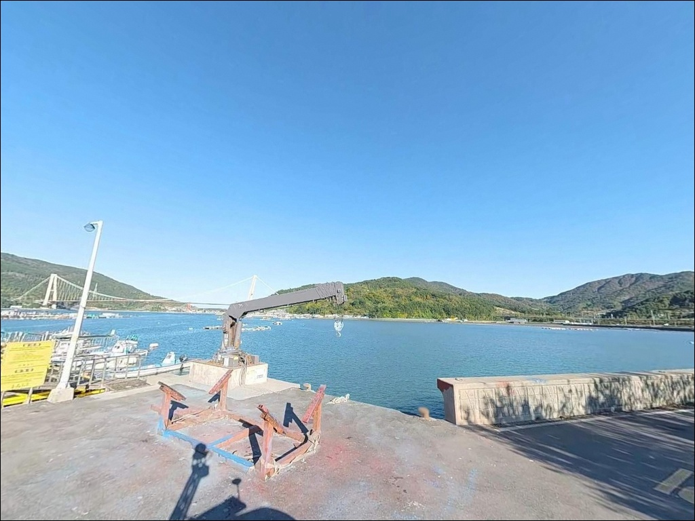
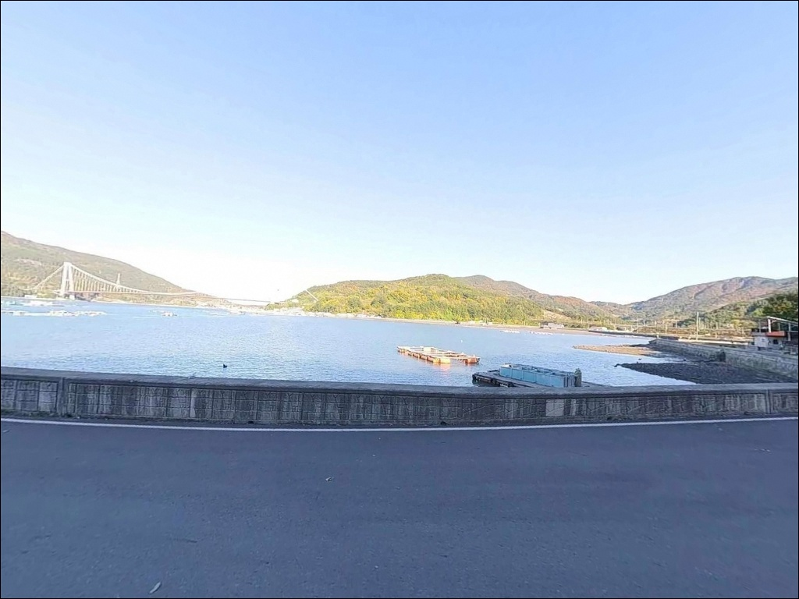

이 페이지에는 광고(제휴 링크 포함)가 있으며, 광고 링크를 통해 구매하면 운영자가 판매 수익 또는 수수료를 받을 수 있습니다. 포인트 사진: 카카오맵 스카이뷰·로드뷰. 이 페이지의 지도·사진 이미지는 카카오맵의 실제 서비스 이미지와 다를 수 있습니다.

덕신선착장
경남 남해군 설천면 덕신리 1684-47
설천면 해안을 따라 들어가면
별다른 안내 표지 없이 나타나는
작은 선착장이 하나 있습니다.
온라인에 조황 정보가 거의 없고,
포인트 이름조차 통용 명칭이 정해져 있지 않은
아직 덜 알려진 내만형 생활낚시 자리입니다.
이 글은 덕신선착장의
진입 동선, 차박 여건, 낚시 지형 조건,
노량해협 조류 특성과 낚시 방식 적합성을
중심으로 정리합니다.
특정 어종 단정이나 조황 보장은
이 글의 범위에 포함되지 않습니다.

남해대교(19번 국도)를 건너
설천면 방면 해안 지방도로 진입하는 것이
기본 경로입니다.
설천면 소재지에서 덕신리 방향으로
분기한 이후부터는 농촌 마을 도로 구간이 이어지며,
최종 선착장 접근 구간은 차량 1대 폭
수준의 도로가 포함됩니다.
승용차와 소형 SUV는 큰 어려움 없이
선착장까지 접근이 가능한 편입니다.
다만 대형 차량이나 캠핑카를 견인하는 경우,
선착장 인근 회차 공간이 넉넉하지 않아
위성지도로 사전에 진입로와 회차 구간을 확인하고
출발하는 편이 안전합니다.
주차는 선착장 인근 공터와
방파제 기저부 측면, 마을 도로변을
후보로 삼을 수 있습니다.
어선 계류 동선과 어구 보관 구역에
접촉하지 않는 자리가 기본입니다.

덕신리는 민가 밀집도가 낮은
소규모 어촌 마을 구조입니다.
외해 직접 노출이 없는 내만 지형 특성상
파도 소음은 크지 않은 편이며,
야간 차량 통행도 많지 않아
차박 프라이버시는 비교적 양호한 환경입니다.
다만 선착장 일대 가로등이 많지 않아
개인 헤드랜턴과 보조 조명은 필수입니다.
노량해협 방면에서 기상 변화 시
바람 영향을 즉시 받는 구조이므로,
당일 해상 기상 예보를
출발 전 반드시 재확인하는 것이 기본입니다.
덕신선착장은 한려해상국립공원
남해지구 구역 내에 위치합니다.
자연공원법 원칙상 지정 장소 외
야영·취사는 허용되지 않으므로,
차박 목적의 하룻밤 체류를 계획한다면
인근 노량야영장(덕신리 1259-3) 사전 예약이
원칙입니다.

덕신선착장 반경 3km 이내에서
확정 가능한 편의시설 정보는 제한적입니다.
선착장 인근은 소규모 어촌 구조이므로
식수, 낚시 소품, 얼음, 연료 모두
출발 전에 갖추고 진입하는 것이
완전 자급 원칙이 현실적인 준비입니다.
반경 3km권으로 이동하면
남해대교 방면 노량항 일대에 닿습니다.
노량항 주변에 소규모 편의시설과
식당가, 주유소가 분포하므로
부족한 소품이 생겼을 경우
이 동선을 활용하는 편이 효율적입니다.
한려해상국립공원 노량야영장은
덕신리 1259-3에 위치하며,
자동차야영지와 캠핑카 전용영지를
운영합니다.
국립공원공단 예약시스템(reservation.knps.or.kr)을 통해
추첨 예약제로 운영되므로
사전 예약 후 방문해야 합니다.

덕신선착장에서 가장 먼저 파악할 것은
노량해협의 물때입니다.
이 해역은 좁은 수로 구조로 조류 속도가 빠른 편이며,
사리 전후에는 어떤 채비를 써도
컨트롤이 어려울 만큼 흐름이 강해집니다.
바다타임에서 설천면 기준 물때를 먼저 확인하고,
조금 전후 또는 물돌이 타이밍에 맞춰
출발 시각을 조정하는 것이 기본 전략입니다.
선착장 구조물 끝단은 이끼로 인해
미끄러울 수 있습니다.
미끄럼 방지 기능이 있는 신발을 준비하고,
구명조끼 착용은 기본입니다.
야간 입장 시에는 헤드랜턴과 안전등을
반드시 지참해야 합니다.
노량항과 광양항 입출입 항로가
이 해역 인근을 지납니다.
선박 운항 중인 항로 방향을
미리 파악해 두고,
운항 선박과의 거리를 유지하는 것이
기본 안전 매너입니다.

덕신선착장은 노량해협 동쪽 내만부에
자리한 소형 선착장입니다.
수로 직격 구간이 아니라
흐름이 일부 완화된 내만 지점에 해당하므로,
사리 외 물때에는 채비 컨트롤이
가능한 구조 조건입니다.
선착장 전면은 내만 특성상
완만하게 변화하는 수심 구조이며,
끝단으로 갈수록 수심 변화가 생깁니다.
바닥은 모래와 암반이 혼합된 저질로,
밑걸림 구간과 모래 혼합 구간이
동시에 존재하는 편입니다.
선착장 구조물 주변에는 일부
테트라포트 구간이 있어
루어로 갯바위식 탐색이 가능한 구간도
포함되어 있습니다.
내만 구조 특성상 조류가 순환하는
흐름이 형성되어 베이트가 머무는 환경이 만들어집니다.
이 일대 노량해협 해역이라면
계절에 따라 붕장어, 노래미, 도다리,
감성돔, 볼락 계열의 접근을
기대해 볼 수 있는 지형 조건입니다.
출조 전 설천면 또는 노량 낚시 조황을
꼭 검색해 보시기 바랍니다.

원투낚시가 이 포인트 구조에 가장 잘 맞는 방식입니다.
선착장 끝단에서 수로 방향으로 채비를 투척하면
조류가 흐르는 구간을 직접 공략할 수 있습니다.
이 일대 해역에서 기대해 볼 수 있는
붕장어, 노래미, 도다리 계열이
수심 변화 구간과 혼합 저질을 선호하는 편이라
원투 공략이 구조상 잘 맞습니다.
찌낚시도 운영이 가능합니다.
내만 구조 특성상 조류가 강하지 않은 타이밍에는
채비가 안정적으로 흘러가는 구간이 형성됩니다.
선착장 석축이나 구조물 주변을 공략하면
감성돔과 볼락 계열에
접근할 수 있는 조건이 됩니다.
루어낚시(라이트게임)도 함께 운용할 수 있습니다.
선착장 구조물 그림자와 조류 경계선 부근을
지그헤드 채비로 천천히 탐색하면
볼락과 농어 계열이 반응하는 구간이 있습니다.
가을철에는 갑오징어 에깅도 노려볼 만하며,
야간 조명이 닿는 선착장 주변이
라이트게임의 기본 자리입니다.

덕신선착장 조류가 너무 강하거나
자리 여건이 여의치 않을 경우,
같은 설천면 노량리에 위치한
남해충렬사 방파제가 가장 빠른 대안입니다.
덕신선착장에서 약 1.5km 거리이며,
바다타임 등록 포인트로
노량해협 동일 해역의 조류 특성과
어종 패턴을 직접 확인할 수 있는 자리입니다.
반경 3~5km권의 감암항 방파제는
발판이 안정적이고 접근성이 좋은 편이며,
원투낚시 구조에 어울리는 대안 포인트입니다.
설천면을 벗어나
노량항 방면으로 이동하면
포인트 선택의 폭이 넓어집니다.
차박 체류를 병행할 계획이라면
인근 노량야영장(덕신리 1259-3)을
사전에 예약하는 것이 기본입니다.
국립공원공단 예약시스템을 통해
추첨 예약을 받으므로
일정 확정 전 예약 가능 여부를 먼저
확인해야 합니다.

원투낚시나 라이트게임을 주로 즐기는 낚시인이라면
덕신선착장의 지형 조건은
시도해볼 만한 구조입니다.
노량해협 조류가 영향을 미치는 내만 자리라는 특성이
조류 타이밍을 맞춘 공략의 근거가 되며,
온라인 기록이 거의 없는 만큼
직접 탐색해 두면
조용한 자기만의 포인트가 될 수 있는 곳입니다.
다만 물때 계산 없이 사리 전후에 진입하거나,
한려해상국립공원 구역임을 모른 채
선착장 인근에서 야영을 시도하면
계획이 틀어지는 상황이 생깁니다.
물때 확인, 야영장 사전 예약, 진입로 점검,
이 세 가지를 갖추고 간다면
아직 덜 알려진 포인트에서
여유 있는 낚시를 즐길 수 있는 자리입니다.
낚시를 마치고 노량야영장에서
예약된 자리에 차를 세우고 하룻밤 머무는
일정으로 엮는다면,
낚시와 합법적인 차박을
부담 없이 함께 즐길 수 있는 출조가 됩니다.